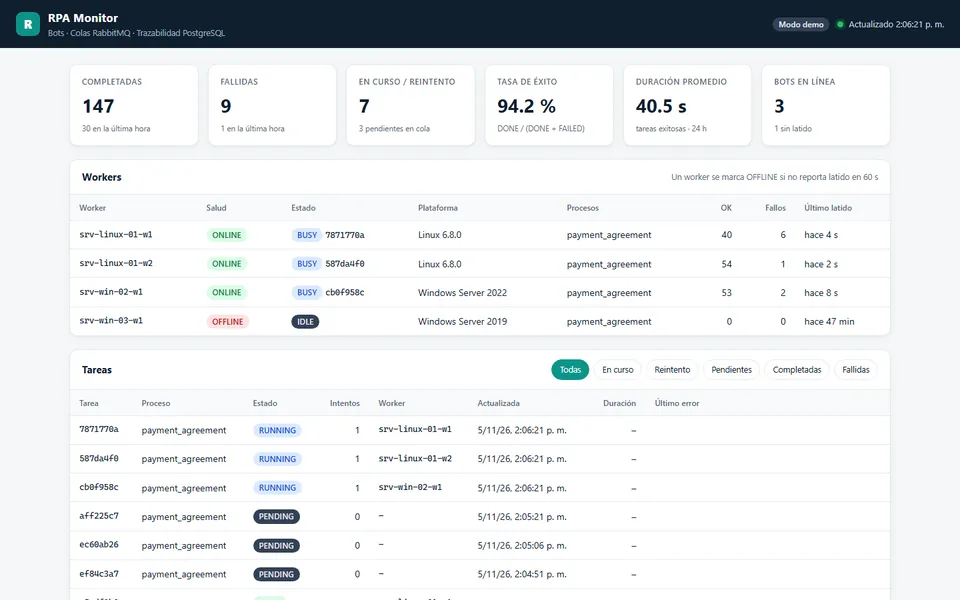

Automatización · Mensajería · Monitoreo
RPA Orchestrator
Plataforma para operar bots RPA a escala: tareas distribuidas por RabbitMQ con reintentos escalonados y cola de mensajes muertos, errores de negocio vs. sistema, idempotencia en tres capas, trazabilidad completa en PostgreSQL y monitoreo de bots por latidos.
- Python
- RabbitMQ
- PostgreSQL
- Playwright
- FastAPI
- Docker
- systemd · NSSM